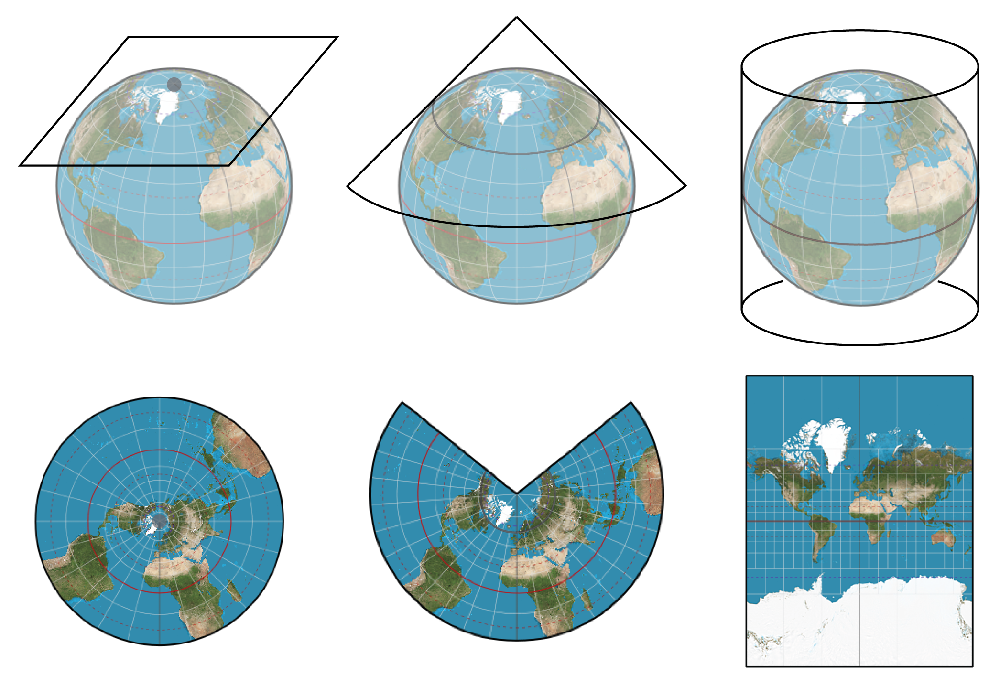
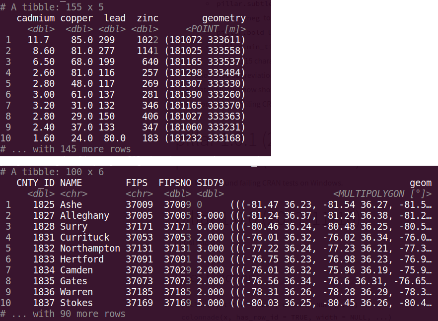
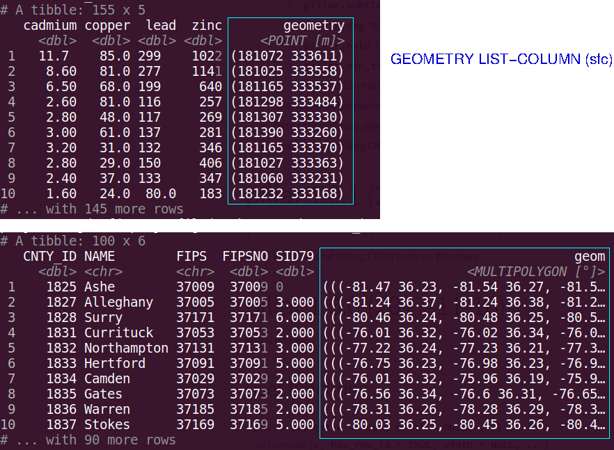
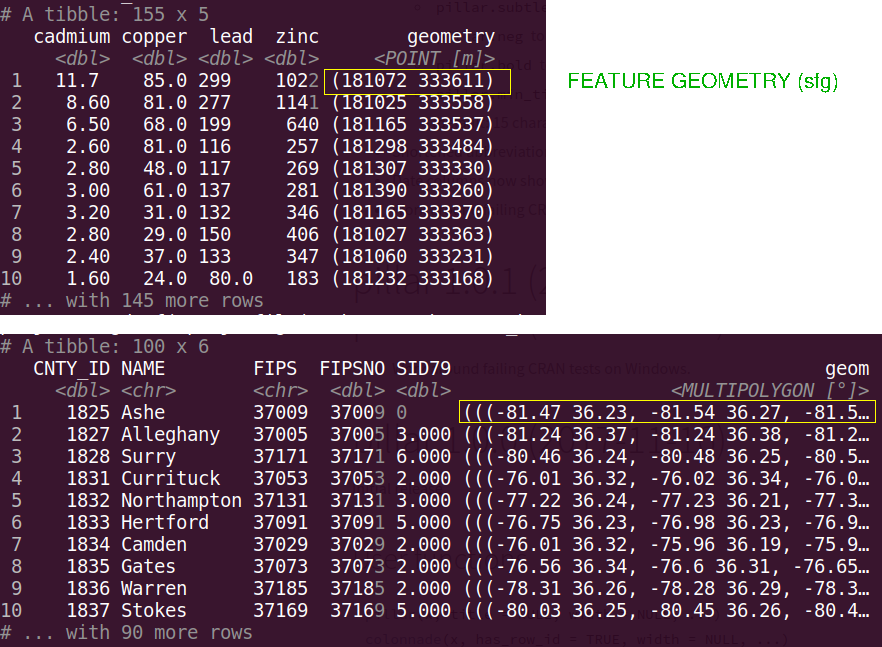
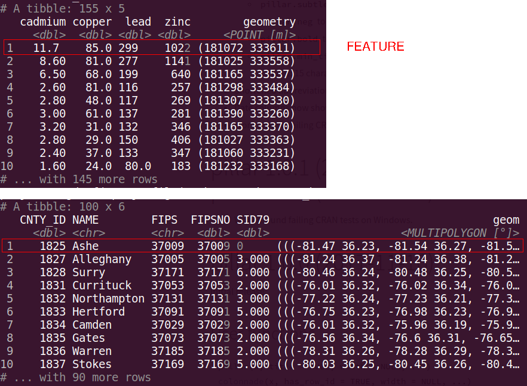
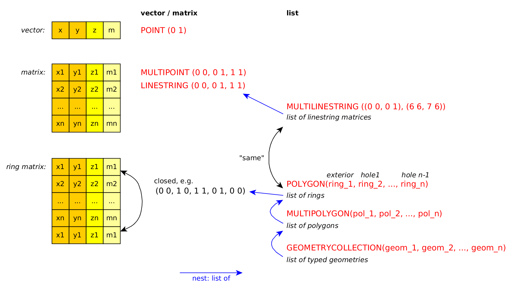
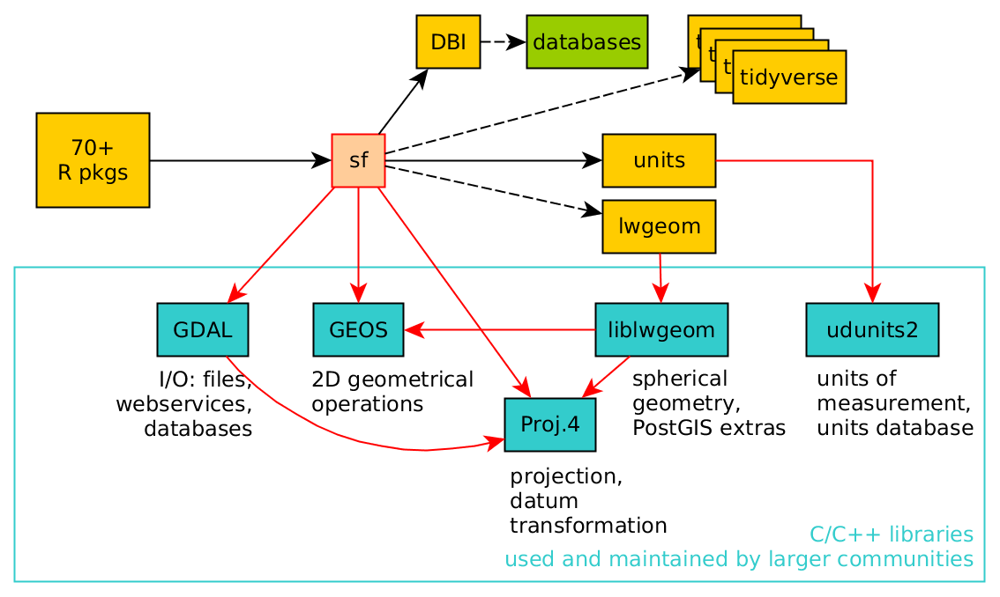
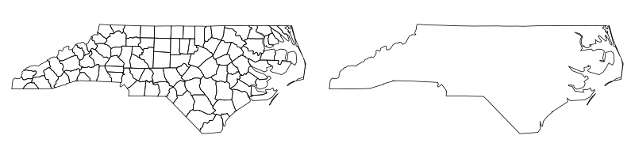

- Today we will introduce spatial data in R
- Most Species Distribution Modelling is inherently spatial
- We are trying to predict occurrence on a landscape
- To do this effectively we need to deal with spatial data
Spatial Data in R
Spatial Data
- Spatial data is often classified into two main types
- Vector Data
- Data associated with points, polygons, lines, etc.
- Raster Data
- Data arranged in grid cells
- Vector Data
- We will use the {sf} package for vector data and the {stars} package for raster data
- Geometrical operations
- Tidy:
sf,dplyr&ggplot2
library(sdmpack) library(tidyverse) library(sf) library(stars)
Overview
The following slides have been modified from https://github.com/edzer/rstudio_conf, authored by Edzer Pebesma (main developer of sf and stars)
What makes spatial data challenging?
- The Earth is a sphere/spheroid/potato*
- coordinates consist of two or three numbers that loose most of their meaning when considered individually
- the most common form is Longitude, Latitude (LL) pairs
- from LL data,
stats::distwill not give you distances - maps and screens are flat, and hence can only show projected data
- projected distances are distorted, and possibly areas, shapes, directions and shortest paths too
- the meaning of a LL coordinate depends on the geographic datum (e.g., WGS84, ETRS89, NAD27 etc)
- a datum is unlikely important when mapping continents, but it is when drones try to deliver pizza’s

Battersby, S. (2017). Map Projections. The Geographic Information Science & Technology Body of Knowledge (2nd Quarter 2017 Edition), John P. Wilson (ed.). DOI: 10.22224/gistbok/2017.2.7
Simple features
- feature: abstraction of real world phenomena (type or instance); has a geometry and other attributes (properties)
- simple feature: feature with all geometric attributes described piecewise by straight line or planar interpolation between sets of points (no curves)

- represent geometry by points, lines or polygons, or collections thereof
- a formal standard (ISO, OGC) since 2004
- supported by OSGeo libraries GEOS and GDAL
- adopted by GeoJSON, GeoSPARQL
- has well-known text (WKT) and binary (WKB) encodings
- WKB used by spatial databases (PostGIS, MariaDB, SQLite, …)
- standard specifies a number of topological metrics, predicates and operations
Operations on geometries:
Single:
- logical predicates:
is_valid,is_simple,is_empty - quantities:
length,area dimension: 0 = point(s), 1 = linear, 2 = surface- derived geometries:
buffer,centroid,boundary,convex_hull,simplify,linemerge,polygonize,node,point_on_surface,triangulate
Pairs/sets:
- quantities:
distance - predicates:
intersects,within,contains,covers,covered_by,crosses,touches,overlaps,equals,disjoint, all other DE-9IM - new geometries:
intersection,difference,union,sym_difference
Package sf
sfstores simple feature geometries as a list-column
- It does that in
sfobjects, extendingdata.frameortibble
- How does it work?




sfg : geometry for one feature

library(sf)

Package sf features
sfobjects extenddata.frameortbl_dfwith a geometry list-column- fast (C++) WKB \(\Longleftrightarrow\) R conversion, used for I/O with libraries and databases
- spatial indexes created on-the-fly to scale up geometrical predicates (intersects) and operations (intersection), and selections (nearest feature)
- simple and relatively small API
- functions/methods start with
st_, as in
st_is_simple(st_point(0:1))
## [1] TRUE
sf & tidyverse
sfspatial objects aredata.frames (ortibbles)- you can always un-
sf, and work withtbl_dfordata.framehaving ansfclist-column sfmethods forfilter,arrange,distinct,group_by,ungroup,mutate,selecthave sticky geometryst_joinjoins tables based on a spatial predicate, or user-defined functionsummariseunions geometry by group (or altogether)

Making an sf object from a data.frame is simple
- Use
st_as_sf(), specify the coordinate columns and a projection (crs)
data(parks_LC)
parks_sf <- st_as_sf(parks_LC, coords = c("long", "lat"), crs = 4326)
parks_sf
data(parks_LC)
parks_sf <- st_as_sf(parks_LC, coords = c("long", "lat"), crs = 4326)
parks_sf
sf object are tibbles (e.g. a data.frame)
pine_rockland <- parks_sf %>% filter(NAME_STATE == "Pine Rockland") pine_rockland
geom_sf
library(ggplot2) ggplot(pine_rockland) + geom_sf(aes(colour = prop, size = prop)) + theme_minimal()
Map Context
The easiest way to view the spatial data in a geographic context is using the package {mapview}
suppressPackageStartupMessages(library(mapview)) mapview(pine_rockland, cex = "prop")
fofpack also includes a polygon for florida
data(florida)
ggplot(pine_rockland) +
geom_sf(data = florida) +
geom_sf(aes(colour = prop, size = prop)) +
coord_sf(xlim = st_bbox(pine_rockland)[c(1, 3)],
ylim = st_bbox(pine_rockland)[c(2, 4)]) +
theme_minimal()
Quantities
st_distance(pine_rockland) %>% units::set_units("km")
Raster data, data cubes
- raster data don’t fit easily in the simple feature framework: is a raster pixel a point, or a small polygon, or some kind of convolution centered over the pixel center?
- raster data come up often for continuous phenomena, when the “thing”-ness of features doesn’t work out (well): is a pixel a thing? is a raster a thing? does the raster contain a thing?
- data (hyper) cubes generalize raster data:
- multiple layers (time, spectral bands)
- time and bands (4D)
- time and bands and sensor (5D)
- time series for points (e.g. hourly PM10 for a set of sensors)
- data cubes are fashionable but not well defined; watch out for opportunistic definitions.
Data cubes are a more general concept than raster data, e.g.
- number of healthy and ill persons by: region, year, age class
What about gridded / raster data in R?
- package
rasteris powerful, and works well with pipes - simple features don’t scale for raster / imagery data
- (long) time series on features do neither
Package github.com/r-spatial/stars for:
- raster and vector data cubes (arrays)
- take on certain raster limitations:
- 4D+ rasters (band, time)
- data sets larger than local disk
- non-raster array data, such as O-D matrix by time and age class
- works with
{sf}, out of the box
library(stars)
data("bioclim_fl")
data("bioclim_vars")
bioclim_fl
plot(bioclim_fl, join_zlim = FALSE)
Extracting data from a stars object is simple
dat_for_parks <- st_extract(bioclim_fl, parks_sf) %>% st_as_sf() dat_for_parks
Some data is NA. Why?
- Some points likely misaligned and fall outside the Florida polygon I used.
inside <- st_within(parks_sf, florida, sparse = FALSE) inside plot(florida) plot(parks_sf[!inside, ], col = "red", add = TRUE) #parks_sf[!inside, ] <- st_snap(parks_sf[!inside, ], st_buffer(florida, -0.001))
Either need to snap the points into the polygon, get a more detailed polygon, or buffer the polygon to make it slightly larger.
Why does space matter?
- We want to predict species occurrence on a a landscape to answer the questions:
- Where is this species? Where was it? Where will it be?
- So out data needs to be spatial, which means, in general, it has a set of coordinates attached to it locating it somewhere.
- Space also creates non-independence between our data points
- In other words, space can create spurious correlations
- Correlation does not imply direct causation
Let’s revisit the Reef
data("RF_abund")
data("RF_sites")
fish_dat <- RF_abund %>%
filter(SpeciesName == "Thalassoma pavo") %>%
mutate(Presence = as.factor(Presence))
sites <- st_as_sf(RF_sites, coords = c("SiteLong", "SiteLat"),
crs = 4326)
mapview(sites, zcol = "ReefAreaIn15km")
{spatialsample}
- A
{tidymodels}package for ‘spatial’ cross validation - Creates training and validation datasets that are spatially disjoint
- This is the method suggested in the ‘paintings predict species distributions’ paper to increase model evaluation accuracy in the presence of spatial autocorrelation (in other words, always)
library(spatialsample)
fish_dat <- fish_dat %>%
left_join(sites %>%
select(SiteCode)) %>%
st_sf()
mapview(fish_dat, zcol = "MeanTemp_CoralWatch")
data_split <- spatial_block_cv(fish_dat, buffer = 200000) autoplot(data_split) autoplot(data_split$splits[[1]]) autoplot(data_split$splits[[2]])
Next Class
- We will run some
{tidymodels}models with{spatialsample} - Learn how to use Global Biodiversity Information Facility (GBIF) to get occurrence data
- Choose a species to start collecting data for (possibly for final project?)
Sign up for GBIF before next class
- Go to https://www.gbif.org/
- Click ‘login’ in upper right corner
- Click on ‘Register’ tab
- Fill in the form, or login with Google, Facebook, or Github
Next Week
- Look at a method to remove spatial autocorrelation
- Find out how to make a model when you only have presences and no absences
- Extract data for point using
{tidysdm} - Talk about Final Projects
RF_recipe <- recipe(as_tibble(analysis(data_split$splits[[1]])),
Presence ~ MeanTemp_CoralWatch + Depth_Site) %>%
step_YeoJohnson(MeanTemp_CoralWatch, Depth_Site) %>%
step_normalize(MeanTemp_CoralWatch, Depth_Site)
RF_mod <-
boost_tree(trees = tune()) %>%
set_engine('xgboost') %>%
set_mode('classification')
RF_wf <- workflow() %>%
add_recipe(RF_recipe) %>%
add_model(RF_mod)
RF_res <- RF_wf %>%
tune_grid(data_split,
grid = 20,
control = control_grid(save_pred = TRUE),
metrics = metric_set(roc_auc))